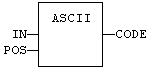
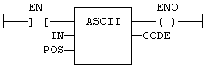

Function
Get the ASCII code of a character within a string.
|
Name |
Type |
Description |
|
IN |
STRING |
Input string |
|
POS |
DINT |
Position of the character within the string. (The first valid position is 1). |
|
Name |
Type |
Description |
|
CODE |
DINT |
ASCII code of the selected character, or 0 if position is invalid. |
In LD language, the input rung (EN) enables the operation, and the output rung keeps the same value as the input rung. In IL language, the first parameter (IN) must be loaded in the current result before calling the function. The other input is the operand of the function.
CODE := ASCII (IN, POS);

The function is executed only if EN is TRUE.
ENO is equal to EN.
